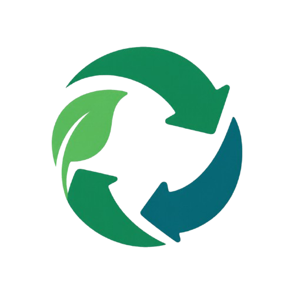
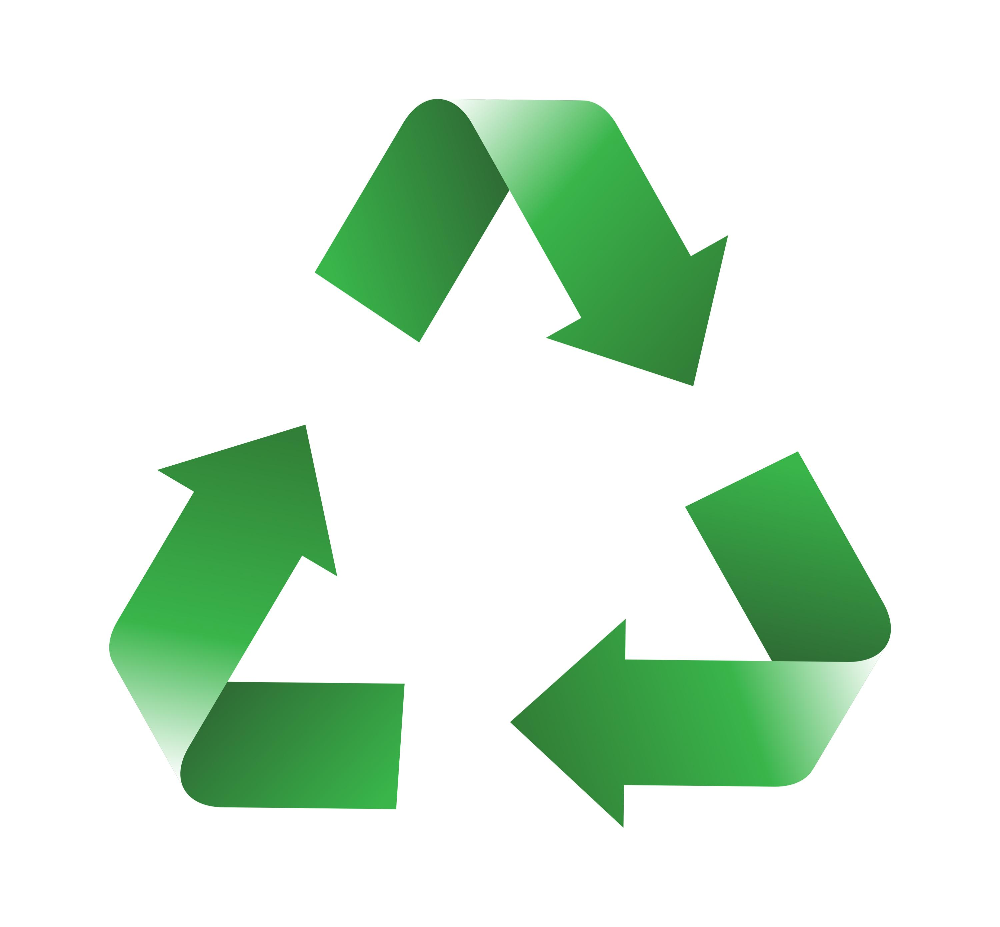
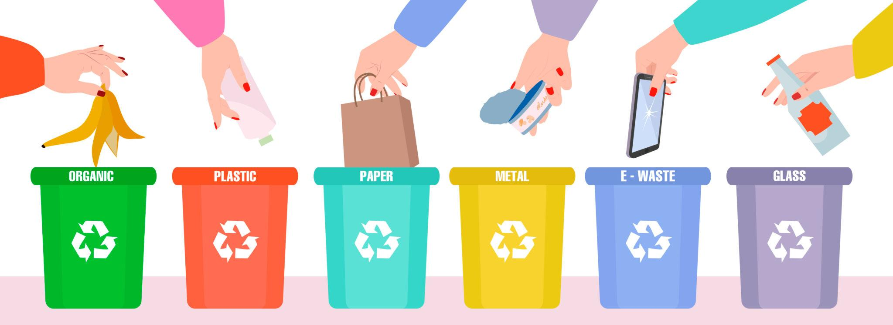
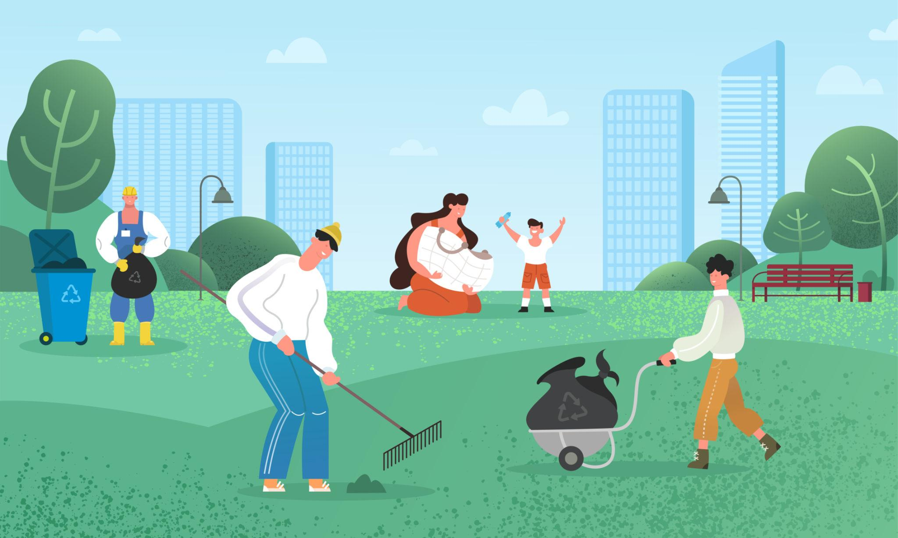

FACULDADE SUSTENTAVEL
♻️ Faça a Diferença Começando Hoje!
Descarte corretamente, encontre pontos de coleta e ajude a construir uma faculdade mais sustentável.

QUEM SOMOS NÓS?

♻️ Encontre onde reciclar
Descubra pontos de coleta simulados no mapa e veja quais materiais podem ser destinados à reciclagem. Mais orientação para descartar corretamente e menos resíduos no lugar errado.

🌱 Transforme hábitos em atitudes
Aprenda a separar papel, plástico, vidro e metal. Pequenas atitudes, quando praticadas por muitas pessoas, podem contribuir para reduzir o desperdício e preservar os recursos naturais.

🌍 Faça parte da mudança
Utilize a tecnologia para aprender, conscientizar outras pessoas e participar de uma comunidade mais comprometida com o meio ambiente. Cada atitude sustentável ajuda a construir um futuro melhor.
DUVIDAS FREQUENTES
Papel, papelão, garrafas plásticas, latas de alumínio, embalagens metálicas e determinados tipos de vidro.
Azul: papel e papelão. Vermelho: plástico. Verde: vidro. Amarelo: metal. Marrom: resíduos orgânicos.
Ele pode ser encaminhado para aterros sanitários ou outros destinos, conforme o tipo de resíduo e as regras locais.
Procure pontos de coleta específicos, pois alguns tipos contêm substâncias que exigem tratamento adequado.
Explore os pontos
Clique em um ponto verde do mapa para ver os materiais aceitos e a distância simulada.